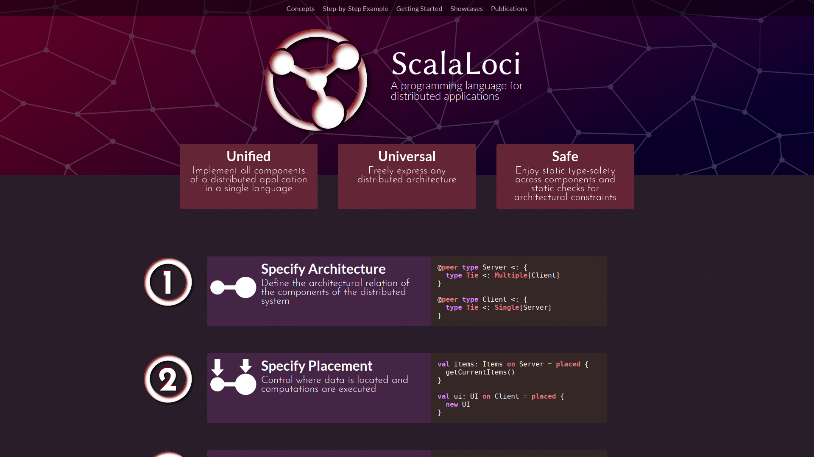

Multitier Modulesin ScalaLoci
Pascal Weisenburger, Guido Salvaneschi
TU Darmstadt, Germany
Programming Distributed Systems
Developing distributed systems is hard
- Consistency
- Replication
- Fault Tolerance
- Distributed functionalities and communication

Multitier Languages
ScalaLoci
- Generic Distributed Architectures
- Placement Types
Placement Types
@peer type Master
@peer type Worker
Peers
val tasks: List[Task] on Master
= placed { getTaskList() }
Placement Types
Architecture
@peer type Master { type Tie <: Multiple[Worker] }
@peer type Worker { type Tie <: Single[Master] with Multiple[Worker] }
Architecture Specification through Peer Types
Eliminated 23 non-exhaustive pattern matches and 8 type casts
Crosscutting functionality separated among compilation units
Developers are not forced to modularize along network boundaries
That's only half the battle!
How to modularize code into (distributed) system functionalities?
Distributed Functionalities
Distributed Multitier Functionalities
Multitier Modules
- Handle large code bases
- Modularize distributed system functionalities
- Compose subsystems
Abstract Peer Types
disentangle distribution and modularization
Abstract Peer Types
- Define multitier modules on abstract peer types
- Compose functionality of different modules by identifying abstract peer types
Abstract Peer Types
Scala Traits and Objects
disentangle distribution and modularization
Stacking Multitier Modules
@multitier trait Offloading[T] {
@peer type Master <: { type Tie <: Multiple[Worker] }
@peer type Worker <: { type Tie <: Single[Master] }
def run(task: Task[T]): Future[T] on Master =
placed { (remote(selectWorker()) call execute(task)).asLocal }
private def execute(task: Task[T]): T on Worker =
placed { task.process() }
}
@multitier trait Monitoring {
@peer type Master <: { type Tie <: Multiple[Worker] }
@peer type Worker <: { type Tie <: Single[Master] }
def monitoredTimedOut(monitored: Remote[Worker]): Unit on Master
}
@multitier trait TaskScheduler[T] extends
Offloading[T] with
Monitoring
Abstract Multitier Modules
Interfaces for Subsystems
@multitier trait BackupService {
@peer type Processor <: { type Tie <: Single[Storage] }
@peer type Storage <: { type Tie <: Single[Processor] }
def store(id: Long, data: Data): Unit on Processor
def load(id: Long): Future[Data] on Processor
}
upper bound allows for refinement
Subsystem Architecture
Placed Methods
Modularization Across Peers
Implementations for Subsystems
@multitier trait FileBackup extends BackupService {
def store(id: Long, data: Data): Unit on Processor =
placed { remote call write(id, data) }
def load(id: Long): Future[Data] on Processor =
placed { (remote call read(id)).asLocal }
private def write(id: Long, data: Data): Unit on Storage =
placed { writeToFile(data, s"/storage/$id") }
private def read(id: Long): Data on Storage =
placed { readFromFile[Data](s"/storage/$id") }
}
Implementation for Abstract Methods
Encapsulation
References to Multitier Modules
Composing Multitier Modules by References
@multitier trait Editor {
val backup: BackupService
@peer type Client <: backup.Processor {
type Tie <: Single[Server] with Single[backup.Storage] }
@peer type Server <: backup.Storage {
type Tie <: Single[Client] with Single[backup.Processor] }
}
@multitier object editor extends Editor {
@multitier object backup extends FileBackup
}
abstract module reference
peer refinement
Module Composition
Peer Composition
Instantiation
Distributed Mutual Exclusion Algorithm
- Nodes elect a leader
- Followers acquire locks
- Leader grants or denies the lock
Mixing Constrained Modules
Leader Election Case Study
@multitier trait MutualExclusion[T] {
this: Architecture with LeaderElection[T] =>
def lock(id: T): Boolean on Node = { ... }
def unlock(id: Id): Unit on Node = { ... }
}
@multitier trait LeaderElection[T] {
this: Architecture with Id[T] =>
def electLeader(): Unit on Node
def electedAsLeader(): Unit on Node
}
@multitier abstract class Id[T: Ordering] {
this: Architecture =>
val id: Local[T] on Node
}
@multitier trait HirschbergSinclair[T]
extends LeaderElection[T] {
this: Ring with Id[T] =>
def electLeader() = on[Node] { elect(0) }
private def elect(phase: Int) = on[Node] { /* ... */ }
private def propagate(remoteId: T, hops: Int,
direction: Direction) = on[Node] { /* ... */ }
}
@multitier object locking extends
MutualExclusion[Int] with
HirschbergSinclair[Int] with
Ring with
RandomIntId
Flink Case Study
@multitier object TaskManager {
@peer type JobManager <: { type Tie <: Multiple[TaskManager] }
@peer type TaskManager <: { type Tie <: Single[JobManager] }
def submitTask(td: TaskDeployment, tm: Remote[TaskManager]) =
on[JobManager] { (remote(tm) call startTask(td)).asLocal }
def startTask(td: TaskDeployment) = on[TaskManager] {
val task = new Task(td)
task.start()
Acknowledge()
}
...
}
@multitier object TaskManagerActions { ... }
@multitier object CheckpointResponder { ... }
@multitier object ResultPartitionConsumableNotifier { ... }
@multitier object PartitionProducerStateChecker { ... }
@multitier object KvStateRegistryListener { ... }
@multitier object TaskDistributionSystem extends
TaskManager with
TaskManagerActions with
CheckpointResponder with
ResultPartitionConsumableNotifier with
PartitionProducerStateChecker with
KvStateRegistryListener
scala-loci.github.io
Conclusion
- Multitier Modules
- Abstract Peer Types
- Pascal Weisenburger, Mirko Köhler, and Guido Salvaneschi. 2018. Distributed System Development with ScalaLoci. Proceedings of the ACM on Programming Languages 2, OOPSLA, Article 129.
- Pascal Weisenburger and Guido Salvaneschi. 2019. Multitier Modules. In Proceedings of the 33rd European Conference on Object-Oriented Programming, ECOOP.